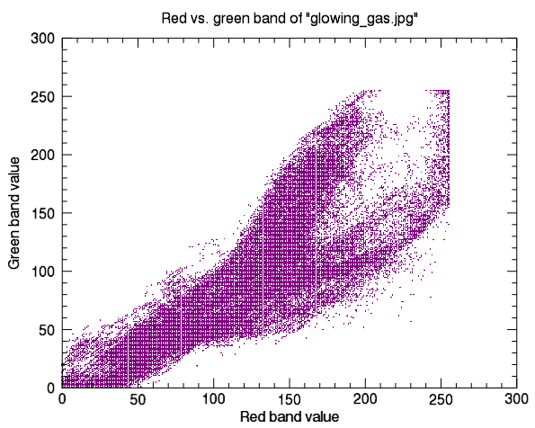

You can create a scatterplot using two bands of image data. Two-dimensional (2D) scatterplots show the range of pixel values in each band, creating a visual way to assess data variance.

The code shown below creates the graphic shown above. You can copy the entire block and paste it into the IDL command line to run it.
; Read in a 2-band image
file = FILE_WHICH('glowing_gas.jpg')
!null = QUERY_IMAGE(file, info)
gas = READ_IMAGE(file)
red_band_pixels = REFORM(gas[0,*,*], product(info.dimensions))
green_band_pixels = REFORM(gas[1,*,*], product(info.dimensions))
; Plot red versus green band
s = PLOT(red_band_pixels, green_band_pixels, $
SYMBOL = 'dot', $
/SYM_FILLED, $
SYM_COLOR = 'purple', $
LINESTYLE = 'none', $
XTITLE = 'Red band value', $
YTITLE = 'Green band value', $
TITLE = 'Red vs. green band of "glowing_gas.jpg"')